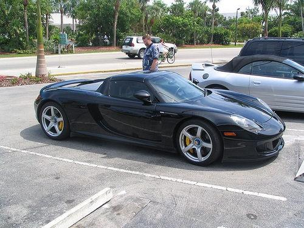
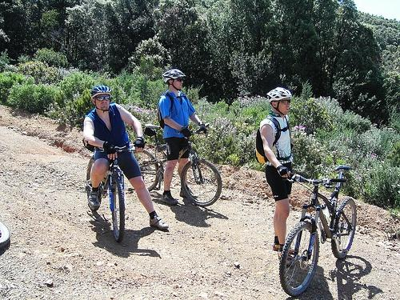
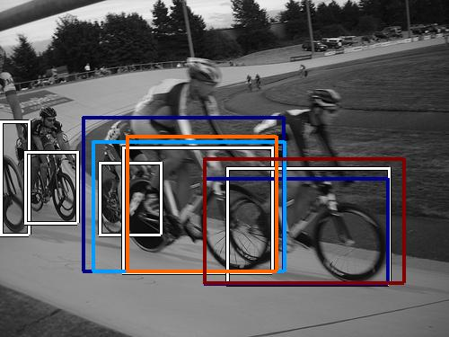
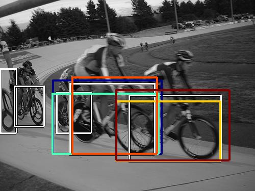

0.540308

0.584170

0.602217

0.698939

0.703621

0.704808

0.723719
0.725985

0.733856
0.744165
| Target image | 0.540308 | 0.584170 | 0.602217 | 0.698939 | 0.703621 | 0.704808 | 0.723719 |  0.725985 | 0.733856 |  0.744165 |
Target image |  7179.369141 |  4552.187988 |  4214.737793 |  3927.532715 |  3305.027344 |  3265.087646 |  3248.043457 |  3230.034424 |  3192.905762 |  2998.067871 |
Target image |  14378.672852 |  12595.117188 |  10247.767578 |  9916.074219 |  9027.895508 |  8771.210938 |  7941.534668 |  7823.929199 |  7388.250977 |  6976.793457 |
| Target image  |  17975.748047 |  17225.267578 |  12600.248047 |  8860.314453 |  8262.447266 |  7413.233398 |  7278.362793 |  6712.945801 |  6686.183105 |  5914.469727 |
| Target image  |  17353.019531 |  16532.693359 |  13829.698242 |  9681.685547 |  7726.774414 |  7312.561523 |  6924.873535 |  6220.406738 |  5810.064453 |  5590.648926 |